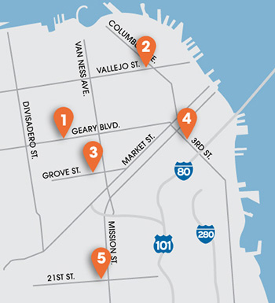

Estacione con Clipper
También puede usar Clipper para pagar el estacionamiento en estos cinco garajes participantes en San Francisco:
- Japan Center Garage - 1610 Geary Boulevard (en Webster St.)
- North Beach Garage - 735 Vallejo Street (entre Stockton St. y Powell St.)
- Performing Arts Garage - 360 Grove Street (en Gough St.)
- Moscone Center Garage - 255 3rd Street (entre Howard St. y Folsom St.)
- Mission Bartlett Garage - 3255 21st Street (en Bartlett St.)

Cómo cargar valor:
Cargue valor para estacionamiento en línea en clippercard.com o por teléfono al 877.878.8883, o configure la carga automática para agregar valor para estacionamiento cada vez que su saldo cae por debajo de $40. El valor para estacionamiento es distinto al valor en efectivo, el cual se utiliza para pagar el transporte.
Cómo pagar:
Cuando ingrese al garaje, tome el boleto de estacionamiento marcado con la hora. Al salir, no pase por las estaciones para pagar y diríjase directamente a su coche. Inserte su boleto de estacionamiento en la puerta de salida y pase su tarjeta Clipper para pagar.
Consejos:
- Puede usar la misma tarjeta para pagar el transporte y el estacionamiento, pero solo puede usar valor en efectivo para el transporte, y solo puede usar valor para estacionamiento para pagar el estacionamiento diario (pero no para el estacionamiento mensual). Al igual que el valor en efectivo, el valor para estacionamiento nunca vence.
- Si sus tarifas de estacionamiento son mayores que su saldo de valor para estacionamiento, no podrá usar su tarjeta Clipper para pagar. Tendrá que usar otra forma de pago, como efectivo o tarjeta de crédito. La inscripción en carga automática asegurará que siempre tenga valor en su tarjeta.